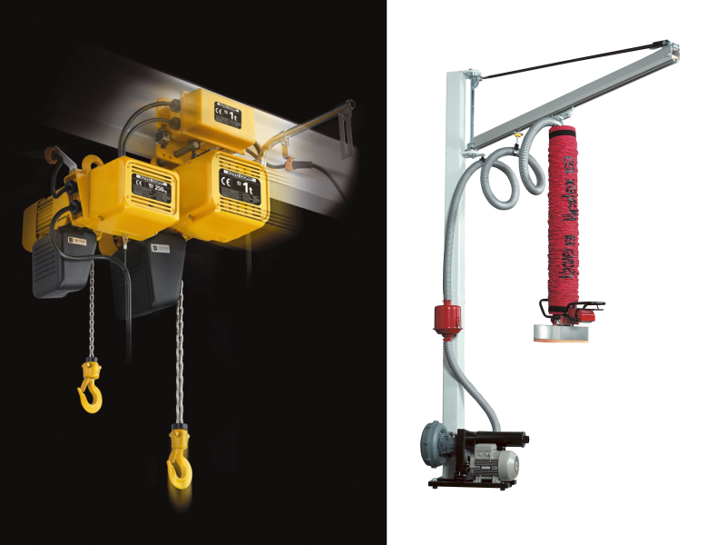
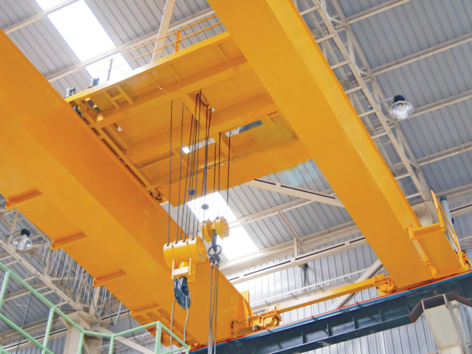

<div fxLayout="row" fxLayoutAlign="center center" style="margin-bottom: 10px">
    <span fxFlex='40' style="background-color: #607D8B"><mat-divider></mat-divider></span>
  <button (click)="onCancel()" fxFlex mat-raised-button><mat-icon class="mat-18">skip_previous</mat-icon></button>
    <span fxFlex='40' style="background-color: #607D8B"><mat-divider></mat-divider></span>
</div>
<mat-grid-list cols="{{w}}" rowHeight="1:1">
    <a (click)="la()" routerLinkActive="router-link-active" >
        <mat-grid-tile mat-elevation-z4 matRipple id='trigger' class="meal-photo">
            <mat-grid-tile-header>Teherfelvevő eszközök</mat-grid-tile-header>
            
        </mat-grid-tile>
    </a>
    <a [routerLink]="['/user/manual']" routerLinkActive="router-link-active" >
        <mat-grid-tile mat-elevation-z4 matRipple id='trigger' class="meal-photo">
            
            <mat-grid-tile-header>Emelőszerkezetek</mat-grid-tile-header>
        </mat-grid-tile>
    </a>
    <a [routerLink]="['/user/powered']" routerLinkActive="router-link-active" >
        <mat-grid-tile mat-elevation-z4 matRipple id='trigger' class="meal-photo">
            
            <mat-grid-tile-header>Emelőberendezések</mat-grid-tile-header>
        </mat-grid-tile>
    </a>
        <mat-grid-tile mat-elevation-z4 matRipple id='trigger' class="meal-photo">
            
            <mat-grid-tile-header>Daruk, futómacskák</mat-grid-tile-header>
        </mat-grid-tile>
</mat-grid-list>
